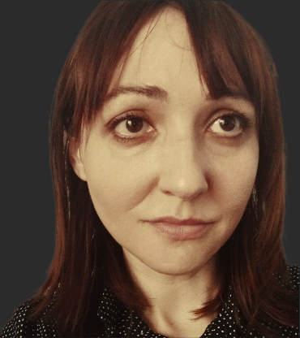

Cześć, jestem
Ewa Puhacz
Nauczycielka Języków Obcych

Nauczycielka Języków Obcych
Dowiedz się więcej


To jest moje

2020/obecnie: Nauczycielka angielskiego - użędnik poństwowy. Regionalne Ministerstwo Edukacji. Murcja. Hiszpania.
2020/2022: Nauczycielka angielskiego. Uniwersytet San Antonio - UCAM. Murcja. Hiszpania.
2018/2020: Nauczycielka angielskiego. Szkoła Średnia Vega Media. Murcja. Hiszpania.
2017/2018: Nauczycielka filozofii, łaciny i angielskiego w szkole średniej. Szkoła Średnia Los Olivos. Murcja. Hiszpania.
2016/2017: Nauczycielka angielskiego. Szkoła Średnia Vega Media. Murcja. Hiszpania.
2015/2016: Nauczycielka angielskiego. Szkoła Średnia Los Olivos. Murcja. Hiszpania.
2014/2015: Nauczycielka angielskiego. Akademia Języka Angielskiego Native English. Molina de Segura. Hiszpania.
2012/2013: Nauczycielka angielskiego. Akademia Języka Angielskiego Fluency Idiomas. Murcja. Hiszpania.
2011/2012: Nauczycielka angielskiego. Akademia Języka Angielskiego Marlowe Centro Idiomas. Murcja. Hiszpania.
2010/2011: Tłumacz - Staż. Europea de Edificios Prefabricados S.L. Murcja. Hiszpania.
2009: Tłumacz - Staż. Stowarzyszenie Murcia Acoge. Hiszpania.
2007: Liceum Ogólnokształcące nr III im. Unii Lubelskiej. Lublin. Polska.
Zapoznaj się z moją


Przygotowanie do poziomów:

Przygotowanie do poziomów:
Oto moje


ewa.puhacz@gmail.com

0034 722 54 82 86

30720, Murcia, Hiszpania